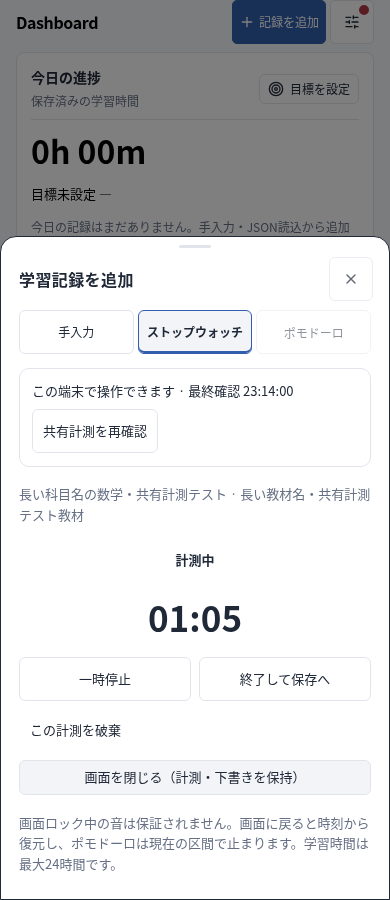
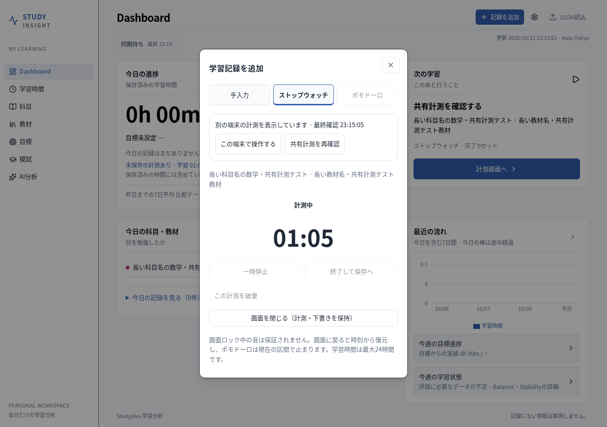

合成データと隔離したChromiumで確認した画面です。スマホ側が操作端末、PC側が閲覧端末です。実データ・実際の同期先には触れていません。


模擬GitHubで、引き継ぎ・一時停止／再開・オフライン競合の保持と出力・終了情報・二重保存防止・応答紛失・同時開始・ポモドーロの学習／休憩／待機を確認しました。360／390／430／1280／1440pxでページと入力画面の横はみ出しも確認しています。
10件のテスト・型チェック・Sites／Pages／単一HTMLビルド成功。既存の記録保存・JSON・削除・タイマー復元のブラウザ検証も成功。iPhone／Windows実機、file://直接起動、本番トークンでの共有書込は未確認です。
GitHub同期先を両端末で揃え、PCのHTMLも最新版に更新してください。閲覧から操作へ移るときは「この端末で操作する」を使います。計測中は15秒間隔を目安に確認するため、他端末の変更には反映遅れがあります。